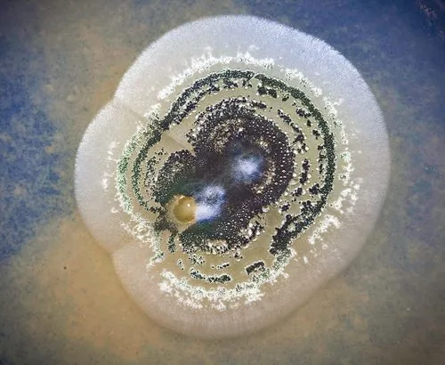

真菌 · 真菌界
绿僵菌 Metarhizium anisopliae

虫生真菌，菌落初白后转墨绿，能侵染并杀死多种害虫，是应用广泛的微生物杀虫剂，对人与脊椎动物低毒。
- 分类
- 门子囊菌门纲粪壳菌纲目肉座菌目科麦角菌科属绿僵菌属
- 栖息环境
- 土壤、落叶层与昆虫体上，温暖潮湿环境易流行
- 地理分布
- 世界性分布，中国各地土壤中常见，已工业化生产
- 保护级别
- 暂无评估；作为生防资源被广泛保存与应用
物种志
绿僵菌的菌落初期白色絮状，产孢后转为墨绿至橄榄绿色，孢子为圆柱形至椭圆形分生孢子，串生。菌丝有隔，可形成附着胞与穿透钉侵入昆虫体壁。有性阶段少见，属于子囊菌。
绿僵菌是重要的昆虫病原真菌，寄主包括金龟子、蝗虫、蚜虫、白蚁等数十种害虫。分生孢子附着虫体后萌发，穿透体壁进入血腔，消耗营养并产生破坏素，虫体死后僵化、覆满绿色孢子。它被开发为生物杀虫剂，用于防治蝗虫、地下害虫与蚊虫，对脊椎动物毒性低，但操作时应避免吸入大量孢子，敏感人群可能过敏。在土壤中它还能与植物根系形成共生关系，促进作物生长。它不感染人，是化学农药的重要替代品之一。
形态与习性
- 菌落初白色絮状，产孢后墨绿至橄榄绿
- 孢子分生孢子圆柱形，串生，绿色
- 宿主金龟子、蝗虫、蚜虫、白蚁等数十种昆虫
- 侵染孢子附着体壁后穿透进入血腔
- 应用微生物杀虫剂，防治蝗虫与地下害虫
- 安全性对脊椎动物低毒，操作时避免吸入孢子
趣味知识
- 绿僵菌孢子附着虫体后能直接穿透昆虫外壳，在血腔内繁殖，最终把虫体变成“绿僵”。
- 它被制成生物农药用于治蝗，是减少化学农药用量的重要手段。
- 它对人和脊椎动物毒性很低，但大量吸入孢子可能引起过敏，喷洒时需戴口罩。
- 虫体死后覆满绿色孢子，这也是“绿僵菌”名字的由来。